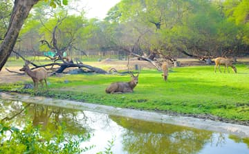

WILDLIFE
 Kaziranga
Kaziranga
It is one of the prides of India. It is where the nature unwinds its pristine form in millions of hues, where wildlife roams fearlessly, where man and nature meets together.

Nehru Zoological Park
One of the well maintained, expansive and among the best zoos in Asia, the Nehru Zoological Park is home to more than 1,500 species of birds, animals, and reptiles.